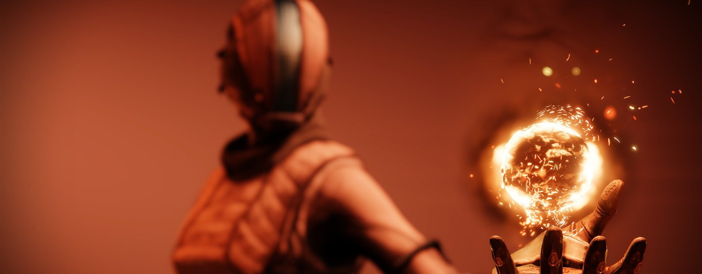
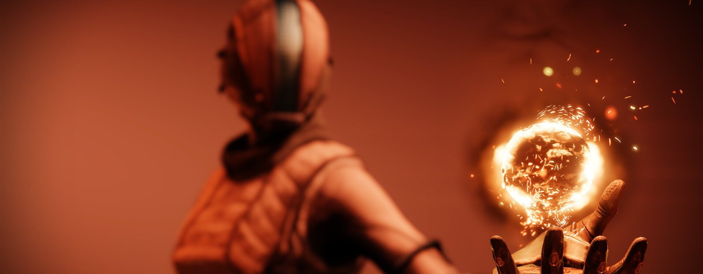

L'Arcaniste
Guerriers érudits de la Lumière, les Arcanistes se dévouent à l'étude du Voyageur et de ses pouvoirs. L'esprit d'un Arcaniste regorge de terribles secrets, et vacille entre génie indéniable et folie véritable. Sur le champ de bataille, ces mystères redoutables pourraient faire éclater la réalité elle-même
Élevez-vous. Plus près, plus près du soleil. Votre vie sera restaurée. Les trois points ne feront plus qu'un.
Filez. Rapides, rapides comme la Lumière. Une terre brûlée sommeille en-dessous. Les ennemis fuient le combat.
Un rayon incandescent. Admirez la voie toute-puissante.
Élevez-vous. Plus près, plus près du brasier. Jamais mes ailes ne fondront. Elles sont déjà en flammes.
Lame de l'aube
Source de radiance
Plantez votre épée dans le sol, elle inflige des Blessures solaires aux cibles proches. L'épée projette une aura continue qui confère les effets de Restauration et Radiance aux alliés proches, et les protège des effets de la stase.
Point du jour
Transformez la Lumière solaire en lames et châtiez vos adversaires depuis les cieux. Vos projectiles de Point du jour lancent une série de flammes mortelles à l'impact.
- Grenades